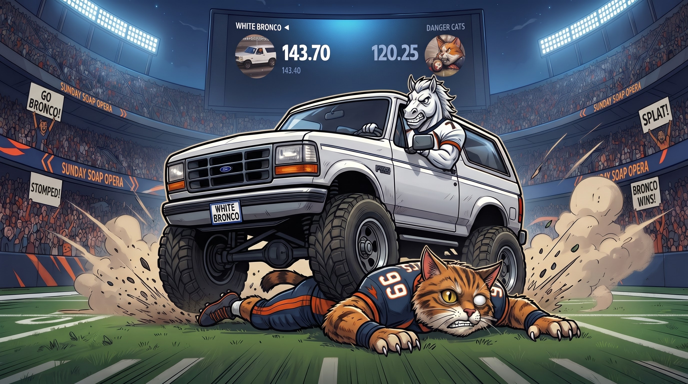

Stop the presses, call animal control, and bow down to your omniscient beat writer! Week 10 in The Sunday Soap Opera featured a purr-fectly hiss-terical litter-box collapse by the Danger Cats in their shiny new Kirk Cousins era, a criminal 42.30-point crime scene in Steeltown that required yellow police tape, and three blockbuster trades that turned the front office wire into a black-market flea market. Most importantly, yours truly predicted every single winner on the slate for a pristine 6-0 sweep. You're welcome, America.
In our official marquee East division showdown presented by Sam N Ella's Chicken, White Bronco’s two-headed quarterback monster declawed the Danger Cats, galloping to a 143.70 to 120.25 beatdown that had the felines hissing in the corner.

Curiosity didn't just kill the Cats this Sunday—front-office malpractice neutered them! Fresh off mortgaging a 5th-round draft pick to bring in "QB3" Kirk Cousins, the Danger Cats marched into their marquee showdown screaming "You like that?!"—only to watch Cousins deliver a lukewarm 17.45-point Kohl's Cash special while they bizarrely paired him in Superflex with Michael Penix Jr. (11.20), leaving Deshaun Watson (19.50) and Justin Herbert (15.55) locked in the kennel on the bench! Even worse, the stray Cats showed up to a heavyweight fight without a kicker (starting Chase McLaughlin on a Bye for 0.00) and left an entire defensive slot completely empty (0.00). Dak Prescott (43.85) and Brock Purdy (36.55) laughed their way to 80.40 combined points, burying Jahmyr Gibbs' 37.20-point masterpiece and sending the humbled tabbies slinking down to 5-5-0 with their tails firmly between their legs.
In a breathtaking 322-point firework show that melted the scoreboard, Josh Almighty unleashed a thermonuclear artillery barrage to conquer Clench Tuxedos 181.00 to 141.10.
Any other week, Clench Tuxedos’ 141.10 points—fueled by Emmett Johnson erupting for 29.10 and C.J. Stroud dropping 26.55—would have been a stress-free walk in the park. Unfortunately for the synchronized Bi-Managers, they stepped directly in front of a freight train. Trevor Lawrence went full Super Saiyan with 34.30 points at Superflex, Josh Allen chipped in 25.30, and Deebo Samuel Sr. added 23.90 to launch Josh Almighty to 7-3-0 while Clench Tuxedos dips to 5-5-0 despite leading the entire East in total points scored.
Sound the air-raid sirens, throw rose petals at their feet, and erect a bronze statue of Three Dots an a Dash in the town square! Fresh off our scathing investigation into Steeltown’s front-office felony, TDnD delivered a biblical 154.55 to 42.30 public execution for their SECOND straight victory!
TDnD didn't just win—they beat Steeltown by 112.25 points while leaving J.J. McCarthy's 21.05 on the bench! Jayden Daniels (26.25), Chase Brown (20.30), kicker Cam Little (23.00), and the Rams defense (23.00) turned Sunday into a victory parade. Meanwhile, Steeltown Junkies posted a horrifying 42.30 points—a score so putrid it violates the Geneva Convention. Having shipped Kirk Cousins to the Danger Cats, Steeltown was reduced to starting wide receiver G. Bernard in the Superflex spot for 1.00 point while the Steelers defense coughed up -2.00. TDnD struts to 3-7-0 with all the swagger in the universe!
In the cruelest prank by the fantasy gods all season, Kyler Duty finally woke up from a nine-week coma to drop 148.05 points—only to get flattened by Whopper Wentzday’s 158.45-point grease truck.
Kyler Duty got career days from George Pickens (32.50), Chuba Hubbard (29.20), and Cam Skattebo (24.20), and still went home empty-handed! Why? Because Jared Goff put down the expired tartar sauce (26.45) and the Minnesota Vikings defense dropped an obscene 32.00 points to save the Burger King’s bacon. Whopper improves to 8-2-0 atop the West, while Kyler Duty stays locked in the dungeon at 2-8-0.
Marr Burrow Smokes kept their foot welded to the floorboard, blowing past RUN CMC 148.55 to 115.90 in a crucial West division showdown.
Joe Burrow (44.25) and Christian McCaffrey (42.30) traded haymakers in a Superflex duel for the ages, practically cancelling each other out. The difference? Marr Burrow got 21.20 points from Parker Washington and a complete team effort, whereas RUN CMC started Alex Singleton on a Bye week (0.00) and got a big fat zero from Xavier Worthy. Marr Burrow cruises to 7-3-0 while RUN CMC slips to 5-5-0.
Choo-choo, baby! Back on the rails and hunting souls, The Pain Train roared through town at 120 miles per hour, flattening the Autobots mob 147.45 to 100.15.
Patrick Mahomes went full scorched-earth with 48.90 points, pairing with Cam Ward’s 23.45 to rocket The Pain Train to 4-6-0 and right back into the West playoff hunt. Meanwhile, the Autobots syndicate—still wearing the mob badge this very paper gave them—tried to get cute by starting wideout C. Tate in their Superflex spot (0.00) while leaving Omarion Hampton’s 16.50 points rotting on the bench. The mob drops to 2-8-0, though they immediately hit the burner phones to cook up another trade.
Whopper Wentzday Receives: J. Dobbins (RB), J. Williams (WR), A. Rodgers (QB), Round 2 pick, Round 3 pick
Autobots Receive: J. Downs (WR), D. Waller (TE), Z. Charbonnet (RB), Round 1 pick, Round 6 pick
Whopper Wentzday: Grade A- Autobots: Grade B
The Autobots mob struck again on Wednesday afternoon, prying yet another coveted 1st-round pick out of a contender's pocket to fund their 2027 rebuild. However, unlike their previous daylight robberies, the syndicate actually had to pay retail this time—handing over a 2nd, a 3rd, Jameson Williams, J.K. Dobbins, and starting Superflex QB Aaron Rodgers to an 8-2 Whopper Wentzday juggernaut loading up for a title run.
White Bronco Receives: B. Nix (QB), T. Kraft (TE), Round 11 pick, Round 11 pick (Autobots), Round 13 pick
Kyler Duty Receives: Q. Judkins (RB), K. McCord (QB), Round 3 pick, Round 6 pick, Round 7 pick (Josh Almighty)
White Bronco: Grade A Kyler Duty: Grade B+
Just 29 minutes after Whopper made a splash, East co-leader White Bronco answered by acquiring Bo Nix and Tucker Kraft! In a Superflex league, giving an 8-2 contender a third starting quarterback alongside Brock Purdy and Dak Prescott is practically illegal—and unlike the Danger Cats' Cousins experiment, Bronco actually won their game! Meanwhile, Kyler Duty waves the white flag on 2026 and walks away with RB Quinshon Judkins and a haul of 3rd, 6th, and 7th-round draft picks.
Steeltown Junkies Receive: P. Nacua (WR), Round 15 pick (Steeltown Junkies)
Clench Tuxedos Receive: E. Johnson (RB), Round 3 pick
Steeltown Junkies: Grade B+ Clench Tuxedos: Grade A-
Evidently traumatized by scoring 42.30 points last week, Steeltown Junkies marched into Saturday night and bought superstar receiver Puka Nacua! On the other side, the Bi-Managers at Clench Tuxedos continue playing 4D chess—flipping a sidelined Nacua for running back Emmett Johnson (fresh off a 29.10-point explosion in Week 10) plus a juicy 3rd-round pick.
Projection: White Bronco 121.19, Josh Almighty 126.57
Gazette Pick: Josh Almighty 🔮
Our Week 11 Marquee Matchup of the Week, brought to you by Uncle Moe's Discount Vasectomies & Bait Shop! First place in the East is on the line as 8-2 White Bronco (battling bye weeks to Drake London and the Packers defense, with newly acquired Bo Nix currently chilling on the bench) takes on a red-hot Josh Almighty squad coming off 181 points. Almighty claims the throne in a thriller.
Projection: Danger Cats 80.56, Steeltown Junkies 71.85
Gazette Pick: Danger Cats 🔮
The "Kirk Cousins Custody Bowl"! Both front offices are dodging bye-week landmines like Neo in The Matrix. The Danger Cats are currently projecting a hairball-inducing 80.56 points with four starters on bye and an empty defensive slot—again!—while Steeltown has Drake Maye on bye and Puka Nacua sidelined. Kirk Cousins scratches his former owners just enough to drag the stray felines past Steeltown.
Projection: Kyler Duty 61.05, Marr Burrow Smokes 133.99
Gazette Pick: Marr Burrow Smokes 🔮
Kyler Duty is projecting a microscopic 61.05 points with five starters on bye following their mid-week fire sale. Marr Burrow Smokes is projecting 133.99 behind Joe Burrow and Caleb Williams. This one will be over before the 1:00 PM kickoffs finish stretching.
Projection: Clench Tuxedos 117.57, Three Dots an a Dash 91.59
Gazette Pick: Clench Tuxedos 🔮
Can TDnD pull off a miraculous three-game winning streak? Even with Jordan Love and Kyren Williams on bye, the Bi-Managers are rolling out C.J. Stroud, Amon-Ra St. Brown, Nico Collins, and newly acquired Emmett Johnson. The fairy tale pauses here.
Projection: RUN CMC 110.42, The Pain Train 103.72
Gazette Pick: RUN CMC 🔮
Massive West division playoff-bubble showdown! The Pain Train trails RUN CMC by just one game for the final playoff spot, but enters Sunday with three starters on bye. Christian McCaffrey and James Cook hold the fort for RUN CMC.
Projection: Autobots 78.00, Whopper Wentzday 125.54
Gazette Pick: Whopper Wentzday 🔮
The Autobots mob is projecting 78.00 points with half their roster on bye, while Whopper Wentzday debuts newly acquired quarterback Aaron Rodgers alongside Jared Goff. The Burger King feasts.